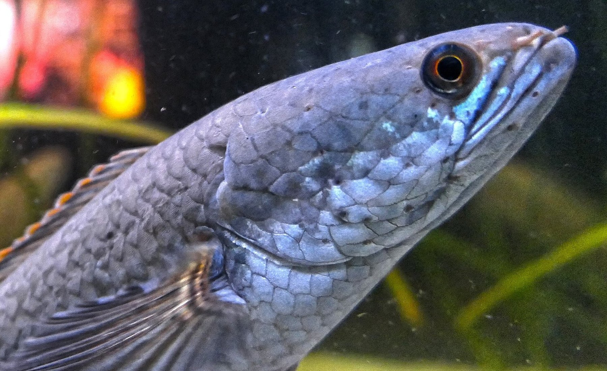

Family Channidae · 蛇头鱼
鳢科Channidae
一个横跨亚洲与非洲淡水系的掠食者家族。从 8 厘米的缅甸鳢，到体长可达 1.8 米的巨鳢——本站以「种」为单位，逐一梳理它们的分类位置、分布与影像。
01 — Overview
科级概览
身体延长、头部似蛇、以空气呼吸——鳢科在形态与生理上都为「伏击」与「耐缺氧」而生。
鳢科（Channidae）隶属辐鳍鱼纲攀鲈目（Anabantiformes），因头部延长、略似蛇首，英文通称 snakehead（蛇头鱼）。身体呈长圆柱形或侧扁，背鳍与臀鳍均延长且不具硬棘，口裂深、颌齿与腭齿发达，是典型的伏击型掠食者。
本科最引人注目的构造是鳃上器（suprabranchial organ）：由第二、第三鳃弓的咽鳃骨与上鳃骨扩大形成的迷路状腔室，可直接吞入空气进行呼吸。这使鳢类能离开水体数日存活，只要皮肤保持湿润；也正因如此，它们能穿越低氧水体、在雨季扩散，并在被引入的地区建立种群。
现生鳢科仅含 2 属 57 种：鳢属 Channa 广布于亚洲，自西亚、南亚至东亚与东南亚，腹鳍存在；副鳢属 Parachanna 仅 3 种，分布于非洲，腹鳍缺失。曾归入本科的穴鳢属 Aenigmachanna，已于 2020 年独立为穴鳢科 Aenigmachannidae。
-
01
蛇形头部
头部长而扁，口裂深，下颌常略突出；吻部与眼的位置因种而异，是野外识别的第一组线索。
-
02
长基鳍
背鳍与臀鳍基部延长、无硬棘。鳍条数目稳定且易于计数，是鳢科种级检索中最常用的性状之一。
-
03
鳃上器
可吞入空气进行辅助呼吸，耐低氧与离水；但也意味着它们极易随活鱼运输被扩散到非原产地。
-
04
鳞被与侧线
体被圆鳞；侧线完整或于中部中断。侧线鳞数、围尾柄鳞数与体侧斑纹共同构成种级鉴别依据。
02 — Taxonomy Tree
分类树
自科至种的完整阶元：科 → 属 → 种。分支末端为 57 个有效种，右侧标注该种的最大体长。
手机端可左右滑动查看完整分类树 →
说明：鳢属目前未建立亚属划分，树内物种按学名字母顺序排列。分子研究提示鳢属内部存在多个早期分化支系（如 gachua 复合群、striata 群、marulius 群），但尚未形成被广泛接受的亚属系统，故本图不设「种组」层级。水族贸易中的「金尘雷龙」为未定种 Channa sp. 'Gold Dust'，未列入本树，见物种图鉴末尾。
03 — Species
物种图鉴
按属、分布区域与 IUCN 等级筛选。点击卡片查看形态数据、分布与影像来源。
没有符合条件的物种。
金尘雷龙 Channa sp. 'Gold Dust'
尚未正式描述的水族贸易型，不计入上方 57 个有效种。影像由站长提供。
04 — Notes & Sources
数据说明
分类、分布与形态数据来自公开数据库与原始描述；影像均标注作者与许可。
分类与名录
名录以 FishBase（2025 版，含 2024–2025 年发表的新种）为主，并参照 Eschmeyer's Catalog of Fishes 核对学名与命名人。科级分类采用 Anabantiformes（攀鲈目）下的 Channidae；部分旧文献将其置于鲈形目（Perciformes）。
种下未设亚属。鳢属物种数多、隐存多样性高，Channa gachua、C. marulius、C. striata 等复合群仍在修订中，本站按当前有效名处理，并在必要时保留异名说明。另有 1 个水族贸易未定种（金尘雷龙 Channa sp. 'Gold Dust'）在图鉴末尾单独列出，不计入 57 个有效种。常见商品名与学名的对应关系见 水族贸易名对照。
影像与许可
物种照片优先取自 Wikimedia Commons 与 iNaturalist 的开放许可作品（CC0 / CC BY / CC BY-SA / CC BY-NC），每张图在详情页标注作者、许可与原始页面。少量标本照来自 Naturalis 等自然史收藏（CC0）。完整清单见 影像版权页。图鉴末尾的「金尘雷龙」为站长拍摄并提供，仅授权本站使用。
部分近年发表、野外记录极少的物种暂无开放版权影像（共 11 种）。这些卡片以占位图明确标注「暂无开放影像」，不使用近似种或错误物种的照片替代。
数据字段
最大体长（Max length, TL/SL）与鳍条数、侧线鳞数均取自 FishBase 物种页；IUCN 等级取自 IUCN Red List（经 FishBase 2025-2 版转引），评估日期随等级列出。分布描述为 FishBase 记录的转译，保留原产地与引入记录的区别。
「中文名」以中文文献与 FishBase 收录名为准；标有 * 者为依学名直译的暂拟名，并非正式通用名。
主要参考
- Froese, R. & Pauly, D. (eds). FishBase. World Wide Web electronic publication, version 2025.
- Eschmeyer, W. N. et al. Catalog of Fishes. California Academy of Sciences.
- Britz, R., Tan, H. H. & Rüber, L. (2024). Four new species of Channa from Myanmar (Teleostei, Labyrinthici, Channidae). Raffles Bulletin of Zoology 72: 1–25. DOI: 10.26107/RBZ-2024-0001.
- Britz, R., Dahanukar, N., Anoop, V. K., Philip, S. & Raghavan, R. (2020). Aenigmachannidae, a new family of snakehead fishes from subterranean waters of South India. Scientific Reports 10: 16081.
- Musikasinthorn, P. (2000). Channa aurantimaculata, a new channid fish from Assam, India. Ichthyological Research 47(1).
- Britz, R. (2008). Channa ornatipinnis and C. pulchra, two new species of dwarf snakeheads from Myanmar. Zootaxa 1755.
使用提示：本站用于分类学与自然教育展示，不构成物种鉴定或放生依据。鳢科鱼类为强势外来种，请勿随意放生。